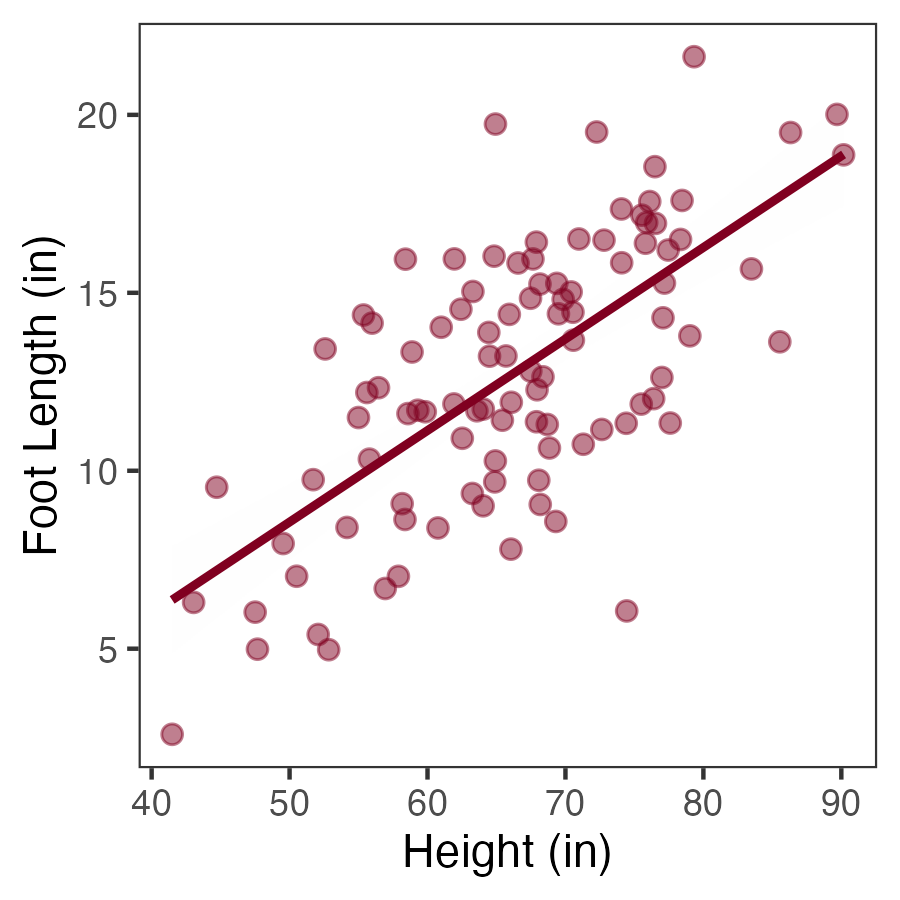

# Run once per computer:
# install.packages("tidyverse")
# install.packages("faux")Week 2: September 11 2025
Packages in R
Many useful functions come built in when you download Rstudio. Any functionality that belongs to the program in this nascent state is called base R.
Packages can be downloaded separately, and allow us to access custom functions that are not available in base R. Many people independently develop and maintain specialized packages that contain custom functions to simplify comoplex tasks.
Accessing a package is a two-step process. First, we must download the contents of a given package onto our computer:
You only need to run the
install.packages()command once per computer.I have the
install.packages()lines “noted out” in the code above, because they prevent the document from knitting.If you encounter issues while knitting documents, check that you do not have any
install.packages()commands written in the code.
Each time you re-open R, you need to call all the packages that you want to use to the current working session using the library() command.
# Run every time you re-open R:
library(tidyverse)
library(faux)- It is good practice to load up all required packages at the top of an Rmarkdown file.
Example: Generating Ficticous Data
It is often quite useful to be able to generate quick fictitious datsets to test out analytic pipelines. Since we have been talking about correlation and simple linear regression today, I will demonstrate this by creating a dataframe of 100 observations that have a strong linear relationship between them.
The rnorm_multi function from the faux package allows us to generate multiple columns of simulated data with a specified correlation between them.
set.seed(994) # For a reproducible example
ex <- rnorm_multi(n = 100, vars = 2,
varnames = c("Height", "Foot_length"),
mu = c(65,12), sd = c(10,4), r = .7)
head(ex) Height Foot_length
1 68.17282 9.053081
2 66.07463 11.923344
3 70.57495 13.669080
4 76.48643 18.544183
5 55.35918 14.376149
6 76.52625 16.950847The
set.seed()function makes the example reproducible. If you use the same value in theset.seed()command as me, you will get the exact same values as me.I have created two columns of data named Height and Foot_length.
Height has a mean of 65 and a standard deviation of 10.
Foot_length has a mean of 12 and a standard deviation of 4.
I specified that I would like the correlation between the two columns to be around 0.7 (which is a strong correlation).
Compute Correlations
We don’t need any specialized packages to compute correlations because these functions come built into Base R. In fact, there are two functions from base R that we can use to compute correlation.
Option #1: cor.test
options(scipen = 999) # turn off scientific notation
cor.test(ex$Height, ex$Foot_length)
Pearson's product-moment correlation
data: ex$Height and ex$Foot_length
t = 9.0028, df = 98, p-value = 0.00000000000001764
alternative hypothesis: true correlation is not equal to 0
95 percent confidence interval:
0.5489307 0.7677638
sample estimates:
cor
0.6728068 The correlation between foot length and height is 0.67, which would be incredibly unlikely to be obtained by chance (p < 0.001)
The
cor.test()function shows us all statistical information including the t-statistic, the degrees of freedom, the 95% confidence interval and the point estimate for the correlation.
Option #2: cor()
cor(ex$Height, ex$Foot_length)[1] 0.6728068- Only prints out the single value representing the correlation.
A Picture is Worth 1000 Words
In addition to seeing these values printed out, we might want to generate a chart to showcase the linear relationship. It is often easier to correctly interpret relationships from charts, and they are a good tool to ensure that your interpretation of the values makes sense given the data.
We can make charts using Base R, but they are not especially nice looking. A better, faster, more flexible way of generating charts is to use the ggplot2() package. This package allows us to create publication-ready charts that can be endlessly customized. Most any chart that you can image can be generated using ggplot2(). For this reason, I recommend getting very comfortable using ggplot2() if you are going to be generating any visualizations through R. The ggplot2() package is part of the tidyverse(). If you have already loaded the conglomerate tidyverse() package, then you will already have access to ggplot2().
a <- ggplot(data = ex, aes(x = Height, y = Foot_length)) +
geom_point(size = 2, alpha = 0.5, colour = "#800020") +
geom_smooth(method = "lm", colour = "#800020", alpha = 0.01) +
theme_bw() +
theme(panel.grid = element_blank()) +
labs(
x = "Height (in)",
y = "Foot Length (in)"
)The code above generates the chart and saves it onto the object
ain my environment.We could print the chart out in-line, but it would not appear very high-quality
To generate a high-quality chart, it is best to save it off as a .png file, then to call that .png file back to the current document. In the codde below, I specify a file name for the chart, dimensions, and ensure that it will appear high-quality by specifying dpi = 300. Then, I use knitr::include_graphics() to call back the chart that I saved.
ggsave("ex_chart.png", a, height = 3, width = 3, dpi = 300)
knitr::include_graphics("ex_chart.png")
Figure 1. Linear relationship between height and foot length, both measured in inches.
There is a clear linear relationship between these two quantities.
Taller people tend to have larger feet.
We know that the relationship is statistically signficiant based on the correlation anaylsis above.
But the correlation analysis does not provide information about the slope of the line of best fit. In order to understand the slope, we must construct a linear model.
Construct a Linear Model
We can use the lm() command to request a linear model from R. The output looks different, but mathematically this is the same process as the correlation analysis shown above.
res <- lm(Foot_length ~ Height, data = ex)
summary(res)
Call:
lm(formula = Foot_length ~ Height, data = ex)
Residuals:
Min 1Q Median 3Q Max
-8.7832 -2.1480 0.4244 2.0276 7.3441
Coefficients:
Estimate Std. Error t value Pr(>|t|)
(Intercept) -4.29949 1.91489 -2.245 0.027 *
Height 0.25717 0.02857 9.003 0.0000000000000176 ***
---
Signif. codes: 0 '***' 0.001 '**' 0.01 '*' 0.05 '.' 0.1 ' ' 1
Residual standard error: 2.844 on 98 degrees of freedom
Multiple R-squared: 0.4527, Adjusted R-squared: 0.4471
F-statistic: 81.05 on 1 and 98 DF, p-value: 0.00000000000001764The R-squared value tells us the proportion of variance in the dependent variable that is explained by variance in the independent variable.
Variance in height accounts for 45% of the variance in foot length.
The R-squared value is simply the correlation coefficient squared.
sqrt(0.4527)[1] 0.6728298If we square root the R-squared value, we get the correlation coefficient that we computed above.
The Estimate for the predictor tells us the slope of the line of best fit. This gives us information about the predicted change in
ygiven a 1-unit change inx.A 1-inch increase in height is associated with a 0.25-inch increase in foot length.
Tidy Outputs
The results from the linear model shown above print out a bit messy. We can use the tidy() function from the broom package to generate better looking outputs for statistical reporting:
library(broom)
knitr::kable(tidy(res), digits = 3)| term | estimate | std.error | statistic | p.value |
|---|---|---|---|---|
| (Intercept) | -4.299 | 1.915 | -2.245 | 0.027 |
| Height | 0.257 | 0.029 | 9.003 | 0.000 |